Capture

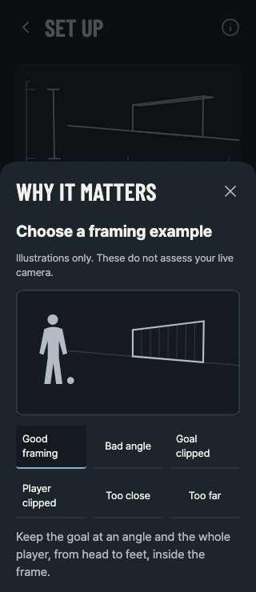
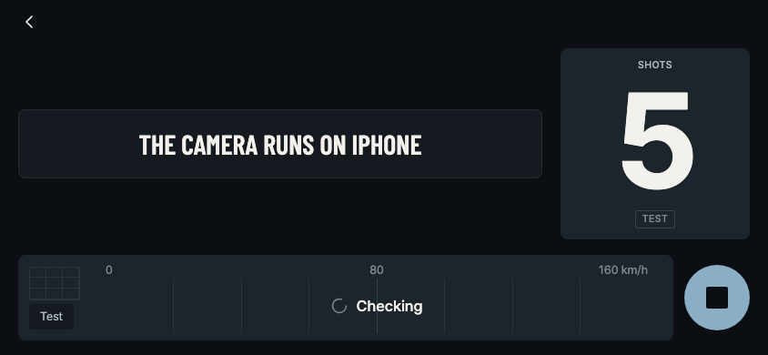
18 September 2026, branch vxbrandon/dev-2026-09-17-2. These are the 21 React Native Web browser captures that the repository's make frames gate pins, re-shot with Playwright against an isolated Expo web preview. They are browser fixtures, not iPhone screenshots, and make no device-rendering, FPS or measurement-accuracy claim. Every result shown is example data and says so on screen.
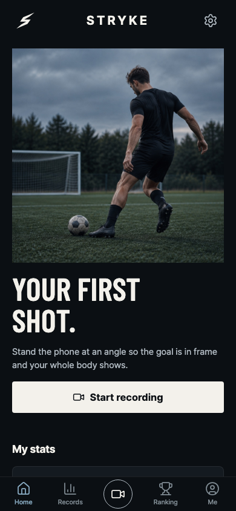
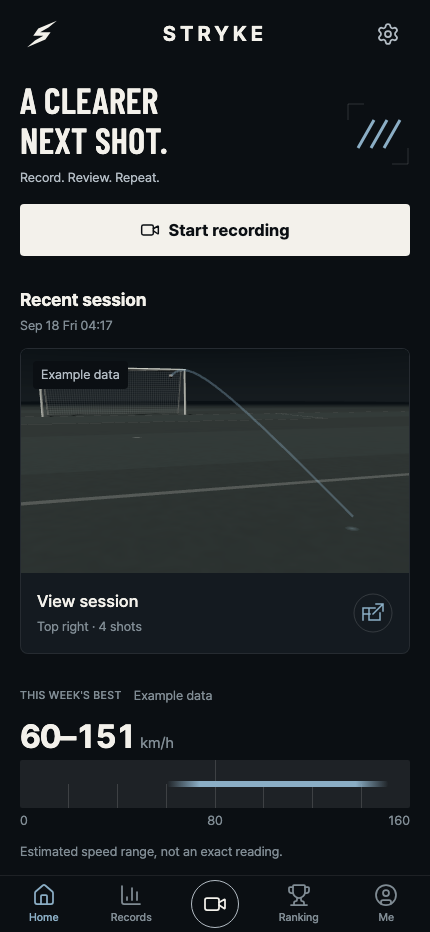
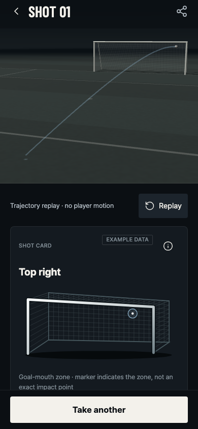
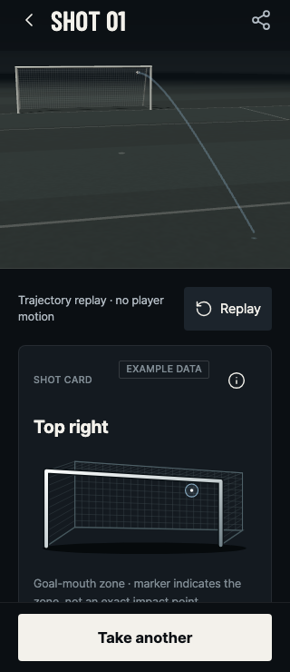
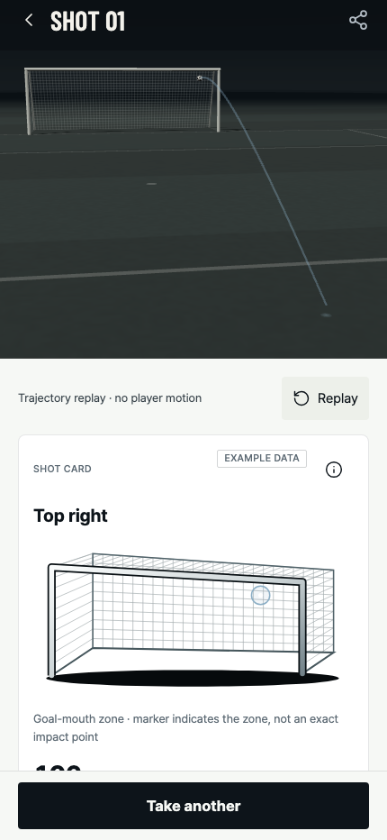
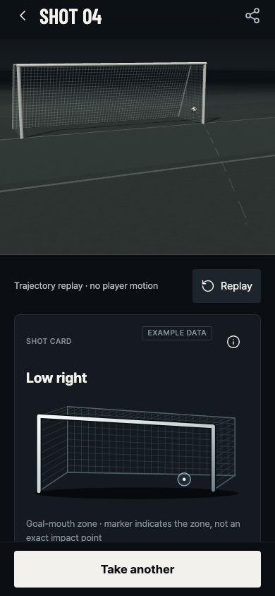
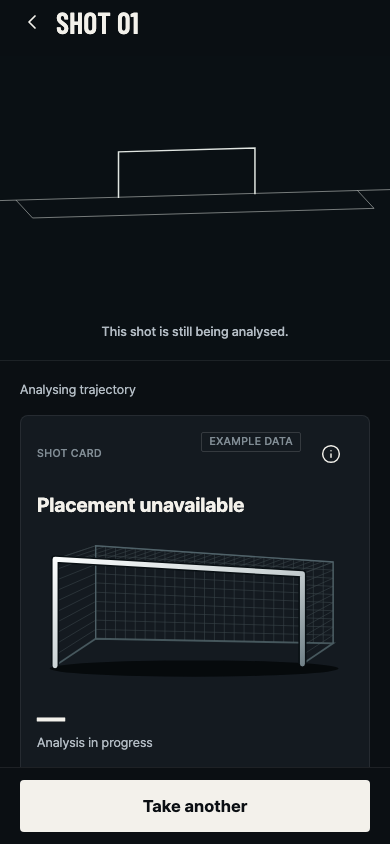
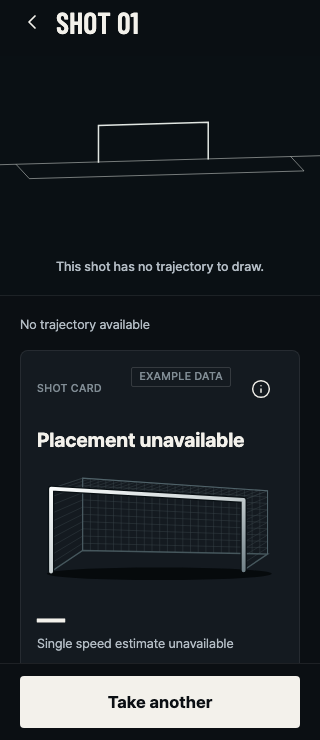
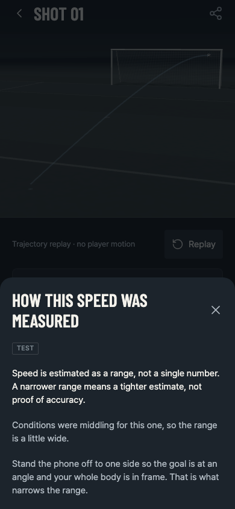
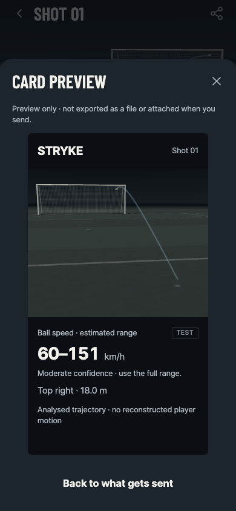
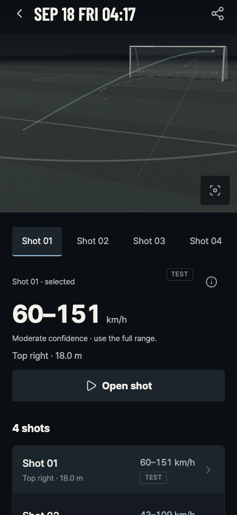
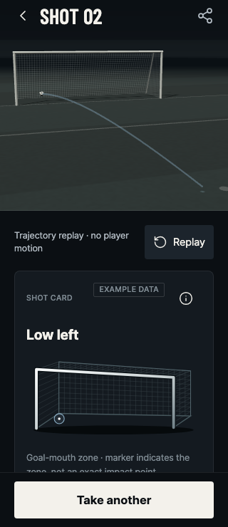
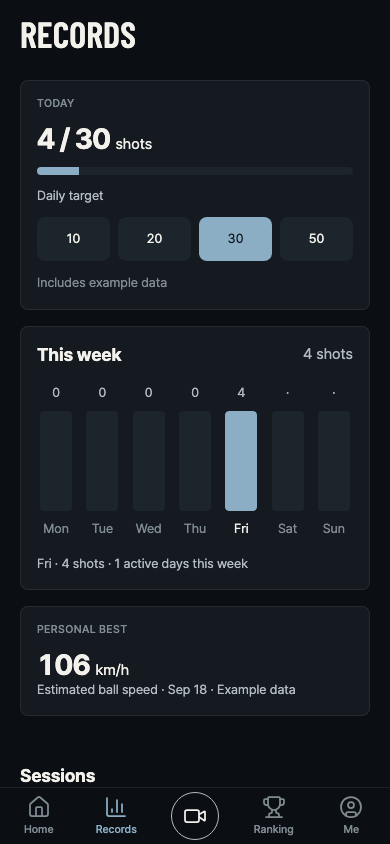
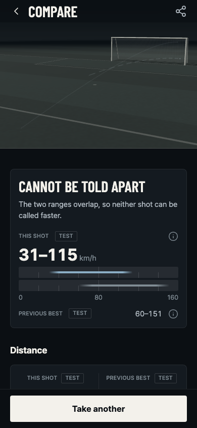


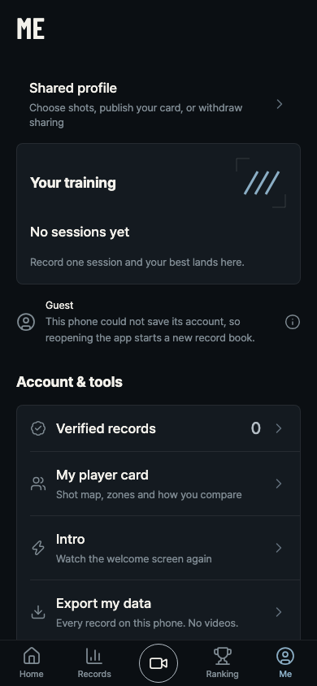
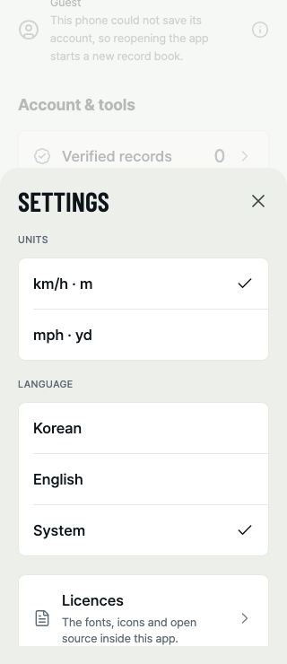
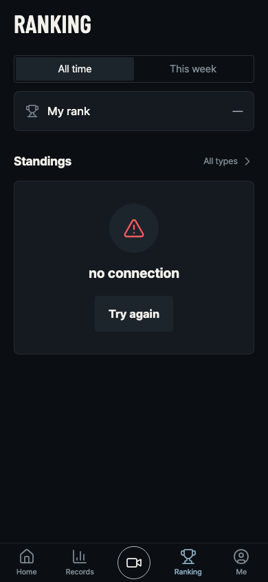
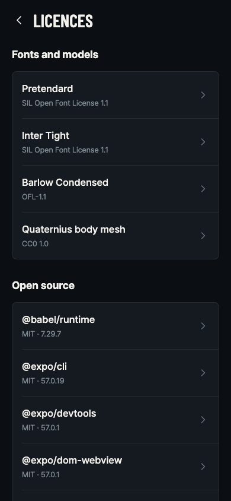